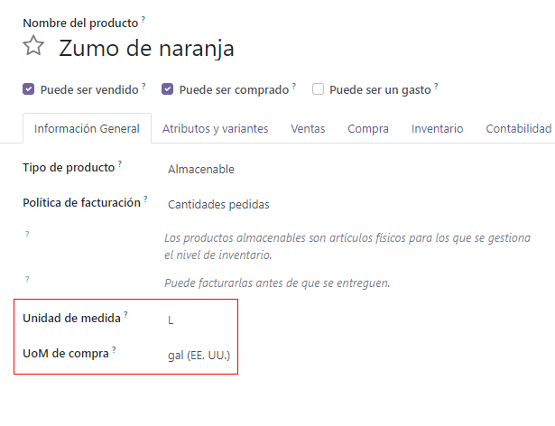

Configurar reglas de reordenamiento¶
Para algunos productos, es necesario asegurar que siempre haya una cantida disponible para cualquier momento. Al agregar reglas de abastecimiento a un producto, es posible automatizar el proceso de abastecimiento para que la orden de compra se cree automáticamente en cuanto la cantidad disponible esté por debajo del umbral establecido.
Importante
El módulo Inventario debe estar instalado para usar las reglas de abastecimiento.
Configure productos para abastecerlos¶
Los productos deben estar configurados de una manera específica para poder agregarles reglas de abastecimiento.
Empezando desde el módulo , , , o , vaya a y haga clic en Crear para crear un nuevo producto. También puede elegir un producto ya existente en su base de datos y hacer clic en el formulario del producto.
Luego, en el formulario del producto, habilite el abastecimiento y seleccione la opción Se puede comprar ubicada debajo del campo Nombre del producto. Por último, establezca el tipo de producto como Producto almacenable en la pestaña Información general.
Agregue una regla de abastecimiento a un producto¶
Luego de configurar un producto de forma adecuada puede agregar una orden de abastecimiento si hace clic en la pestaña Reglas de abastecimiento que ahora es visible en la parte superior del formulario del producto. Después haga clic en Crear en el tablero de Reglas de abastecimiento.

Una vez creado, las reglas de abastecimiento se pueden configurar para generar órdenes de compra automáticamente definiendo los siguientes campos:
La Ubicación especifica dónde se deben almacenar las cantidades ordenadas una vez que se reciben e ingresan a las existencias.
La Cantidad mínima establece el umbral más bajo para la regla de abastecimiento, mientras que la Cantidad máxima establece el umbral más alto. Si las existencias disponibles están en la cantidad mínima, se creará una orden de compra para reabastecerlas a su cantidad máxima.
Example
Si la cantidad mínima está establecida en
5, la cantidad máxima está establecida en25y las existencias disponibles son cuatro, se creará una orden de compra para adquirir 21 unidades del producto.Puede establecer una Cantidad múltiple para ordenar los productos solo por lotes para ciertas cantidades. Dependiendo del número establecido, esto puede resultar en la creación de una orden de compra que establecerá las existencias resultantes dsiponibles por arriba de lo especificado en el campo de Cantidad máxima.
Example
Si la cantidad máxima está establecida en
100pero la cantidad múltiple está establecida para ordenar el producto en lotes de200, entonces se creará una orden de compra para 200 unidades del producto.Las UdM especifican la unidad de medida para la cual se ordenará la cantidad. Para productos discretos, esto debe estar establecido en
Unidades. Sin embargo, también puede estar establecido en unidades de medida comoVolumenoPesopara productos no discretos como agua o ladrillos.
Active manualmente las reglas de abastecimiento usando el planificador¶
El planificador activará automáticamente las reglas de abastecimiento, el cual se activa una vez al día de manera predeterminada.Para activar las reglas de abastecimiento manualmente, vaya a .
Nota
Active manualmente las reglas de abastecimiento también activará otras acciones planificadas.
Gestione las reglas de abastecimiento¶
Para gestionar las reglas de abastecimiento para un solo producto, vaya a la página del formulario del producto y seleccione la pestaña Reglas de abastecimiento ubicada en la parte superior del formulario.
Para gestionar todas las reglas de abastecimiento para cada producto, vaya a . Desde este tablero, puede realizar las típicas acciones de Odoo en masa como exportar datos o archivar reglas que ya no necesita. También están disponibles los Filtros, Agrupar por o el menú de tres puntos del formulario para que busque y/u organice las reglas de abastecimiento que desee.